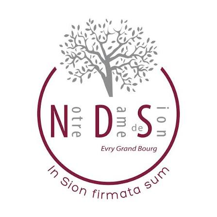
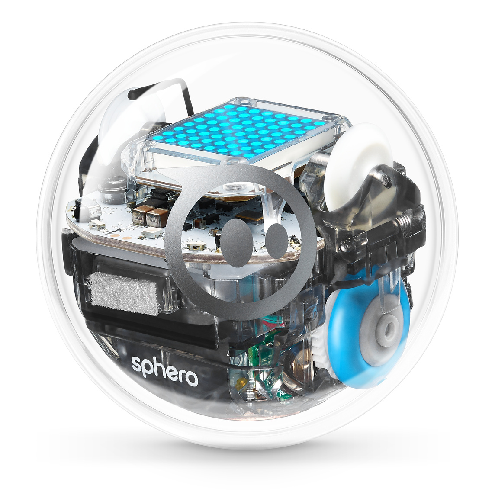
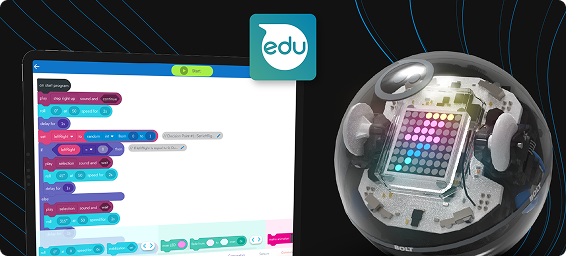
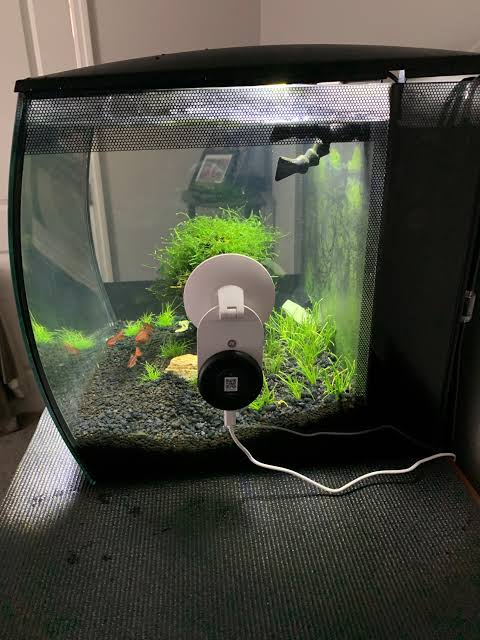
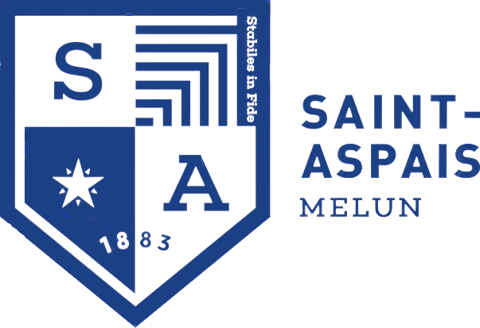

Parcours professionnel
Stage de 3e - Décembre 2021 (5j)
CNRS - Laboratoire APC - Paris
Stage de 1ere - Octobre 2021 (9j)
Société Générale - La Défense
Bac STI2D SIN (2023-2025)
Notre Dame De Sion - Evry-Courcouronnes
Site du collège / lycée privée :

BTS SIO SLAM en alternance (Septembre 2025 à novembre 2025)
BTS SIO SLAM en initial de Décembre 2025 à Mai 2027 (En cours)
Site du campusCompétences techniques
HTML, CSS, SQL (bases de données), C++, C#, Python
SolidWorks - SketchUp
Suite Office
Hardware (montage PC, dépannage)
Réseaux (configuration routeurs, cablâge, Wi-Fi)
Software en général
Mon CV
Télécharger CVMon rapport de stage BTS SIO SLAM première année (18 mai au 26 juin 2026)
Modification du site officiel GESTIUT de l'université de Ville d'Avray : partie élève et prof
(exemple : Pronote, École direct, ENT, netypareo)
Résumé BTS SIO SLAM
Voir le site du BTS SIO SLAMLe BTS SIO (Services Informatiques aux Organisations) est une formation de 2 ans après le bac qui prépare aux métiers de l’informatique en entreprise.
Elle forme à l’administration des systèmes et réseaux ou au développement d’applications, selon l’option choisie (SISR ou SLAM).
Les étudiants y apprennent la programmation, les bases de données, la sécurité informatique, la gestion de projets et le support aux utilisateurs.
La formation est très professionnalisante, avec des stages en entreprise et permet soit une insertion rapide dans le monde du travail, soit une poursuite d’études.
Projets informatiques réalisés
Formation dispensée par Apple en 2019
Programmer un robot nommé SPHERO BOLT avec une appli/logiciel sphero edu de type scratchpour lui faire faire des actions.
( Déplacement, rotation, lumière, son )


Robot suiveur de ligne en Arduino (Première STI2D)
Robot suiveur de ligne programmé en Arduino python dans le cadre d'un projet de classe.
Groupe de 2 comparé au reste de la classe de groupes de 3 et 4, premier groupe à avoir réussi
Note de fin de projet et d'oral : 17/20
Exemple de vidéo non fini du robot en action :
Site internet avec caméra connectée (Terminale STI2D)
Site web permettant de surveiller un aquarium avec caméra et contrôle de la température.
De ce style :

Stage de première année BTS SIO SLAM (18 mai au 26 juin 2026)
Modification du site officiel GESTIUT de l'université de Ville d'Avray : partie élève et prof
Modification du CSS et HTML de la partie élève pour améliorer l'expérience utilisateur et la navigation.
Modification du PHP et Template (smarty) de la partie prof pour ajouter de nouvelles fonctionnalités de stockage et matériel pour la tracabilité des objets.
Site du lycée / campus

Procédures informatiques
Mon URL
Contact
Mail : anael.bleurvacq777@gmail.com
Téléphone : 07 61 88 97 21
LinkedIn : Voir mon profil ou Voir mon profil